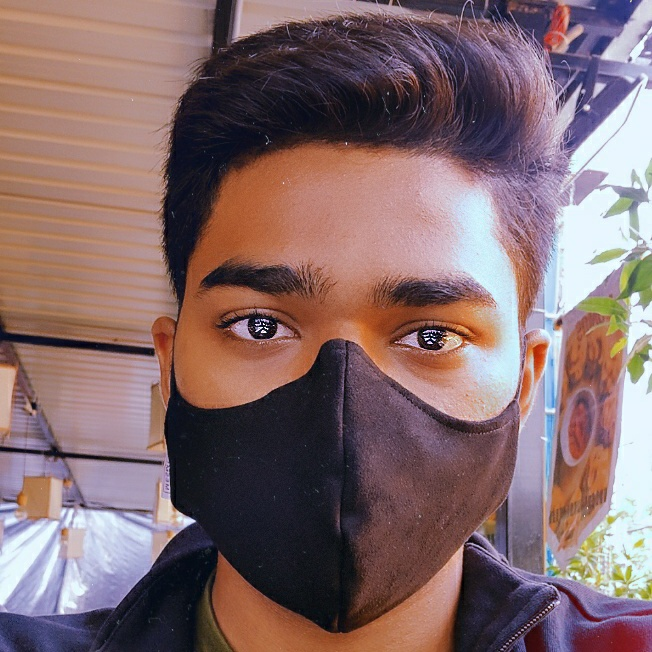

Valluru Chetan Reddy

Contact me Resume
| Technical Skills | Skills |
| Python | Arts |
| HTML | Gaming |
Contact : 732-532-7879
Mail id: valluruchetanreddy@gmail.com
Whatsapp Link: http://wa.me/+919100855854
Github Link: https://github.com/chetanreddyv
- 10th : 8.8 (CGPA)
- Inter : 93.4
- B.Tech: 8.15/10.00 (CGPA)
SKILLS: HTML, C, Python
SOFTWARES and TOOLS:
Arduino IDE, MATLAB, Multisim, AutoCAD, Adobe photoshop, Blender, Xilinx.
CERTIFICATIONS:
1. Udemy Certification in Python- Complete Python Bootcamp From Zero to Hero in Python
2. Bits pilani certification in IOT
Projects:
Software:
1.Code:https://github.com/chetanreddyv/resume
Output:https://chetanreddyv.github.io/resume/
Hardware:
1. Contactless Thermal scanner with sanitiser dispenser and Alert text.
2. Home automation on local network
3. Smart Irrigation
4. RFID based lock system
5. Sanitiser Dispenser
ACHIEVEMENTS:
1. GOLD in Global Young Scientist Challenge
2. 3rd in Project Paper Presentation - Convergence
WORKSHOPS:
1. Attended a workshop on IOT and home automation in VNR Vignana Jyothi college during Convergence-2019.
HACKATHONS:
1. Participated in Code For Good organized by JP Morgan Chase.
TRAININGS :
1. Competitive coding skills training program conducted by VNRVJIET in association with Smart Interviews.
New Brunswick
New Jersey
USA